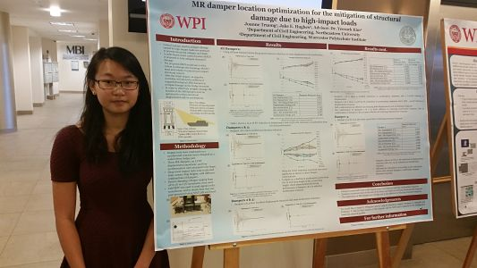

PORTFOLIO
Northeastern University


Software Developer & Research Assistant:
Working under Professor Richard Gilbert
Developing software applications & resources to enhance 3D printing processes on Digilab CellJet
Worcester Polytechnic Institute (WPI)


Research Assistant: Worked under Professor Yeesock Kim
Location optimization of MR dampers for the mitigation of structural damage due to high impact loads
Conducted tests to determine optimal location of dampers
Created MATLAB code to analyze results
Generated graphs of structural response reduction due to dampers on Excel
Wrote a research paper to be used as a foundation for journal publication
Created and presented poster presentation to professors and graduate students
Stuyvesant High School


Line Tracing Autonomous Robot:
Designed models using mechanical design software, built three-dimensional models using a three-dimensional printer, and soldered electrical components
Other Projects
Sorting Colored Ping Pong Balls
Programmed sorting apparatus to sort stack of colored Ping-Pong balls: camera would identify color, stepper motor would rotate to appropriate receptacle, and actuator would release one ball from stack.
Maze Solving Robot
Programmed, designed and constructed a small maze solving robot capable of edge detection, light sensing, and obstacle detection
Skills
MATLAB, Python (MIT certified) , C++, AutoCAD, SolidWorks, OrCAD, Mechanical Desktop, CADKEY, LabVIEW, Microsoft Office
{kind=link}